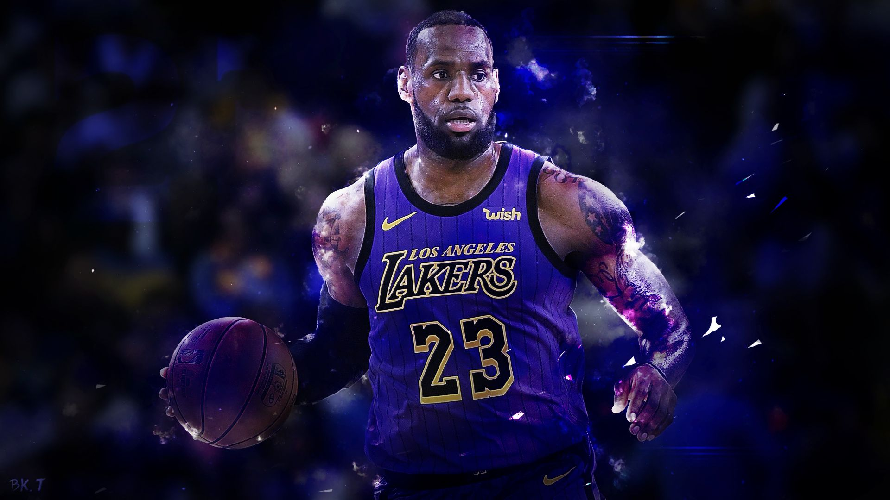
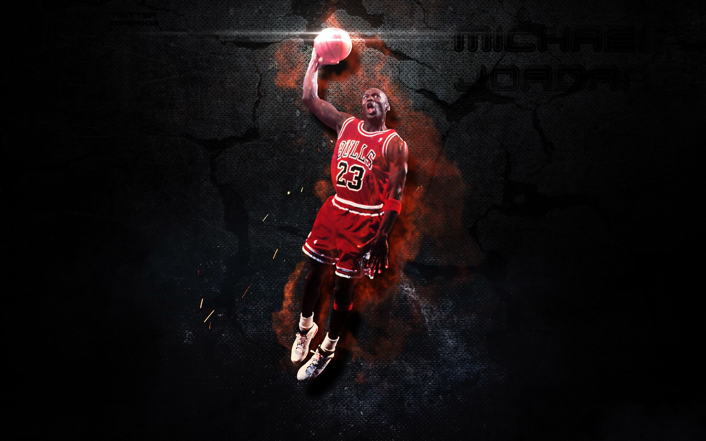
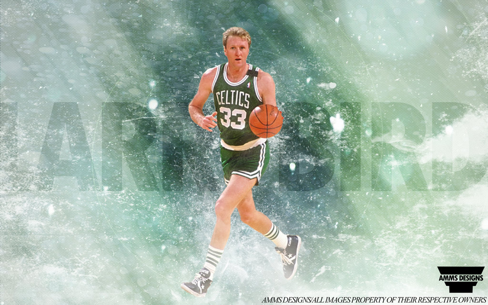
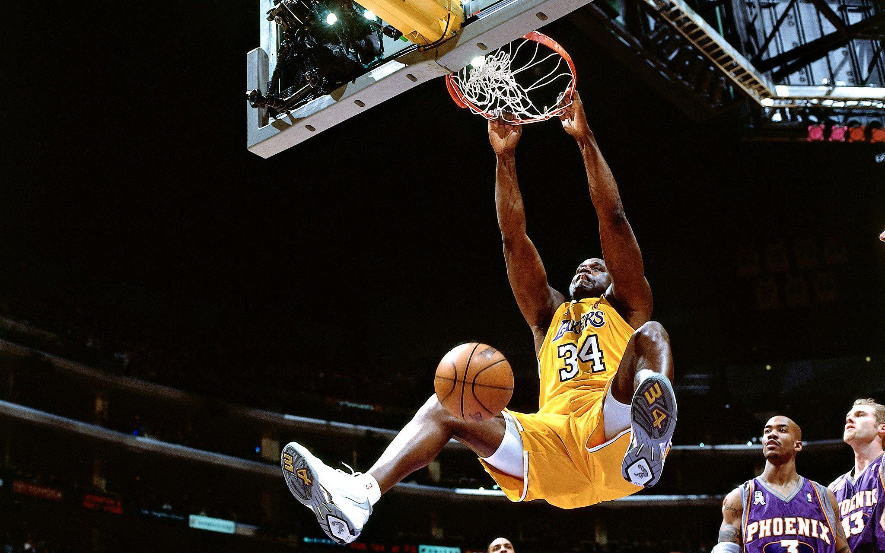
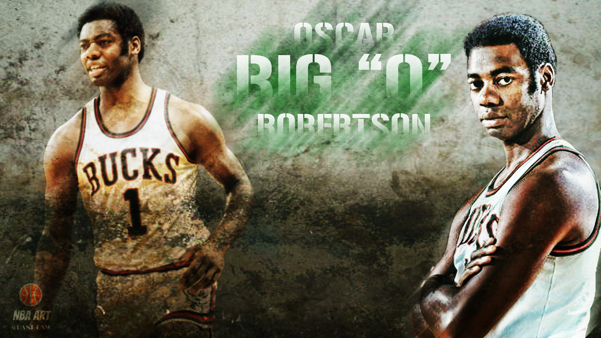

Yes, the man many fans (ignorantly) consider the most overrated choke artist in the league is actually the best player to ever set foot on a court. LeBron James just does things that shouldn’t be humanly possible. He’s bigger than a good portion of the players in the NFL and yet he still moves as gracefully as the most nimble guards in basketball. Moreover, he not only faced the incredible pressure of being anointed “The Chosen One” by Sports Illustrated as a teenager, but he’s actually exceeded the lofty expectations set for him. As magnificent as earlier players were, they never had to deal with the 24/7 stresses of 21st century media, which James has with aplomb. Through the publication of this list, James has averaged a Robertson-esque 27.5 points, 7.2 rebounds, and 6.9 steals per game and—unlike the Big O—he was doing so against teams stocked with elite athletes and not players who smoked cigarettes at halftime. When people knocked him for not winning championships early in his career, they overlooked that he almost single-handedly took an overmatched Cleveland Cavaliers squad to the 2007 NBA finals at just 22 years old. And, of course, he’s since won two titles (and counting?) as a member of the Miami Heat. Not only does he routinely pull off feats that I’ve never before seen, he has consistently evolved his game to fix the relative weak spots he was previously criticized for. Pretty much all you can ask for from the best ever" width="250" height="150" onmouseover="myFunction(this);">
I know I risk getting run out of my beloved Chicago on a rail for daring to suggest His Airness isn’t the best player ever but, well, I just don’t think he is. Most famous player ever? Absolutely. Most important player ever? Quite possibly. Most obsessively competitive to the detriment of ever having normal human relations with anybody? Oh my, yes. The man’s desire to be the best is legendary and propelled him to six championships, five MVP awards, All-Star appearances in every full season he played, and the status as possibly the best defender ever. Plus his 30.1 points per game is the NBA’s highest career scoring average. But, well, he played alongside another top-25 talent in Scottie Pippen and was coached by the strategic genius Phil Jackson during his most productive years. He was amazing, but he had a lot of help, at least more than the last guy on this list. And, frankly, it’s sort of fun tweaking all the Chicagoans who are surprisingly defensive about their sporting accomplishments. Related: did you know that the 2013 Seattle Seahawks had the best defense in NFL history?" width="250" height="150" onmouseover="myFunction(this);">
Don’t be fooled by his humble small-college provenance and the “Hick from French Lick” nickname—Larry Bird was one of the fiercest competitors and greatest smack-talkers in NBA history. The uber-confident Bird had arguably the quickest release of anyone to ever play basketball and he’d often let his defender know that the shot was going in soon after it left his hands. He racked up three championship rings and 12 All-Star appearances in his injury-shortened 13-year career. Moreover, his rivalry with Magic Johnson—who, spoiler alert, you’ll see a bit later in this list—during the 1980s launched basketball into an unprecedented level of national popularity that the sport has never fallen from.
" width="250" height="150" onmouseover="myFunction(this);">
At the opposite end of the “attractive play” spectrum from Duncan is Shaquille O’Neal. Where Timmy would work his way around an opponent in the post with his superb footwork, Shaq would often use his extraordinary bulk (7’1” and 315 pounds) to bully his way to the basket. Once there, he would finish with an emphatic dunk, a foolproof strategy that helped O’Neal lead the NBA in field-goal percentage 10 times in his career. But O’Neal wasn’t just pure physicality—he was surprisingly graceful for such a massive man and he had a deft touch with his close-range jump shots. His free-throw shooting, on the other hand…" width="250" height="150" onmouseover="myFunction(this);">
Oh jeez, this guy. While I’m too young to have ever seen him play, his statistics are so mind-blowing that I wish I had a time machine for the express purpose of going back and seeing him in action. During the 1961–62 season, “The Big O” averaged a triple-double with 30.8 points, 12.5 rebounds, and 11.4 assists per game. Oh, and the 12-time All-Star also helped initiate true free agency into the NBA through a landmark antitrust suit, an accomplishment just as impressive as his jaw-dropping on-court exploits." width="250" height="150" onmouseover="myFunction(this);">